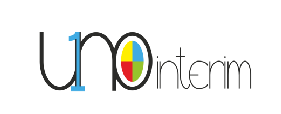
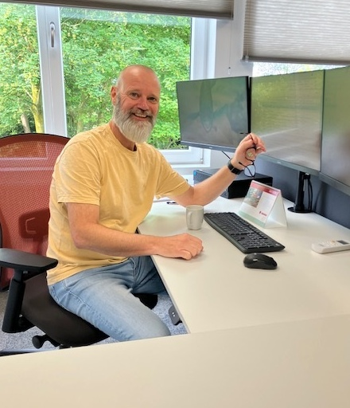
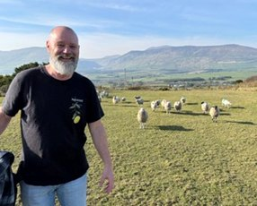
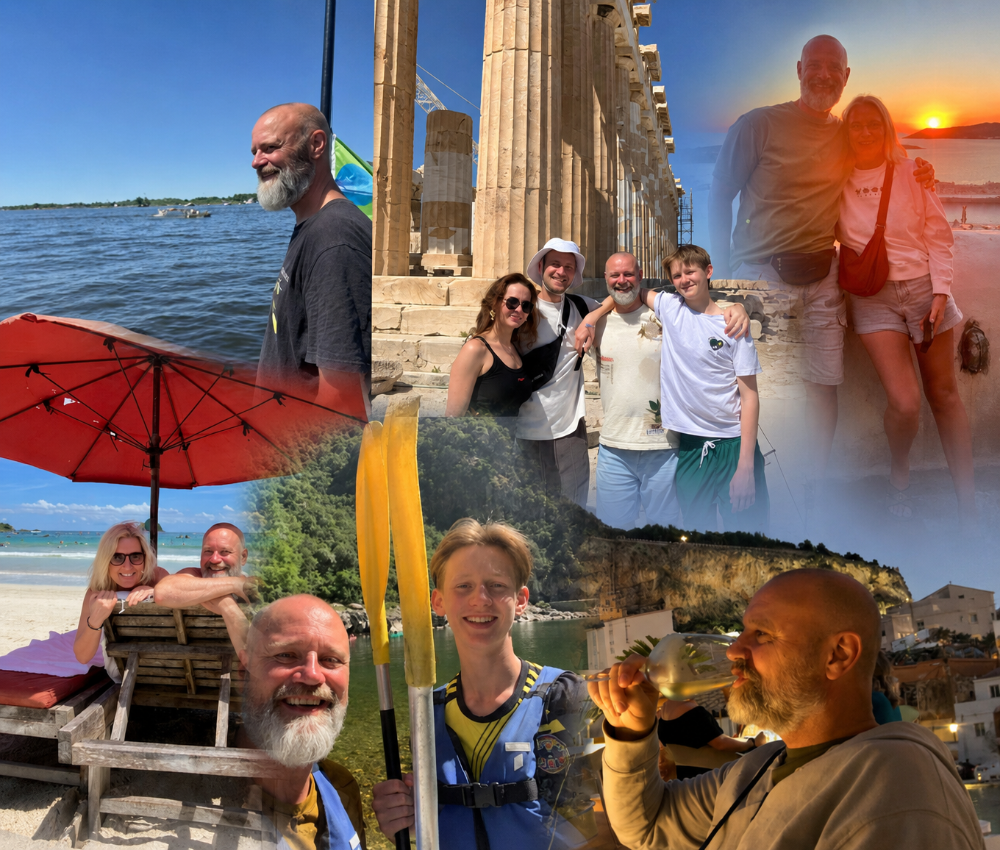

Groei in goede banen leiden
Groei in goede banen leiden zonder de wendbaarheid van de organisatie te verliezen.

Uno Interim
Voor organisaties in ontwikkeling, waar richting, structuur en eigenaarschap nodig zijn.
Organisaties schakelen mij in wanneer groei, verandering of werkdruk vraagt om tijdelijke managementkracht. Ik help teams, processen en verantwoordelijkheden op elkaar af te stemmen, breng duidelijkheid in rollen en afspraken en zorg voor rust, structuur en resultaat.

Groei in goede banen leiden zonder de wendbaarheid van de organisatie te verliezen.
Zorgen dat mensen weten wat er van hen verwacht wordt.
Teams en afdelingen beter op elkaar laten aansluiten.
Grip krijgen op planning, werkvoorraad en resultaten.

Ik word ingezet wanneer organisaties behoefte hebben aan rust, structuur en richting. Ik help processen, teams en verantwoordelijkheden op elkaar af te stemmen, maak afspraken helder en creëer de voorwaarden voor duurzame resultaten.
Planning, werkvoorbereiding, calculatie en projectondersteuning op elkaar afstemmen en beheersbaar maken.
ichting en samenhang creëren zonder de wendbaarheid van de organisatie te verliezen.
Leverbetrouwbaarheid verbeteren en meer grip krijgen op voorraad, planning en samenwerking in de keten.
Projectteams ondersteunen bij groei, professionalisering en voorspelbare resultaten.
Mijn loopbaan speelt zich af op het snijvlak van operatie, projecten en organisatieontwikkeling. In uiteenlopende organisaties heb ik leidinggegeven aan operationele teams en specialisten, zowel op kantoor als in het warehouse en binnen retail, handel en productie.
Ik help organisaties om structuur aan te brengen, processen beter op elkaar af te stemmen en duidelijkheid te creëren in rollen, verantwoordelijkheden en verwachtingen. Daarbij combineer ik een pragmatische aanpak met aandacht voor mensen en samenwerking.
Mensen omschrijven mij vaak als rustig, verbindend, pragmatisch, resultaatgericht en betrouwbaar.

Ik geloof dat duurzame resultaten ontstaan vanuit vertrouwen, duidelijke afspraken en een stabiele basis.
Mensen maken organisaties succesvol. Daarom kijk ik niet alleen naar processen en resultaten, maar ook naar samenwerking, eigenaarschap en vertrouwen.
Heeft uw organisatie tijdelijk behoefte aan extra managementcapaciteit of ondersteuning bij een veranderingstraject?
Edwin Holla
Uno Interim
+31 6 29583965
edwinholla1@outlook.com
LinkedIn: Edwin Holla